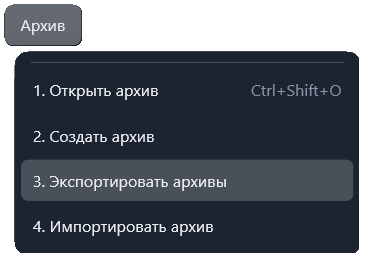

Функция «Экспортировать архивы»
Функция сохраняет все архивы программы во внешнюю папку.
Путь и вызов
- Нахождение в программе
- Верхнее меню → "Архив" → "Экспортировать архив"
Экспорт
- Выберите команду «Экспортировать архивы».
- Укажите папку назначения.
- Дождитесь уведомления с количеством экспортированных архивов и путём сохранения.
В выбранной папке создаётся каталог «Скачанные архивы». В него копируются все файлы *.apkw с сохранением структуры каталогов. Если такой каталог уже существует, программа создаёт новый каталог с отметкой времени.
Для сохранения только одного выбранного архива используйте действие «Сохранить архив на диск» в панели инструментов или контекстном меню архива.
